A woman is dragged screaming through a neon forest by something enormous and profoundly bored. A barbarian arrives to rescue her, announces himself, and performs a small dance. She watches all of it, and politely declines. Then the monster turns out to be someone else entirely, the woman leaves with her, and the hero falls face first into the moss.
The rescue story is one of the oldest shapes there is, which makes it one of the easiest to break. Everyone watching already knows the ending, so the only real job is to not deliver it. Here the girl doesn't need saving, the monster isn't a monster, and the hero's biggest obstacle turns out to be himself.
This is the complete breakdown: the five short Midjourney prompts behind the cast and the forest, the eight second ceiling that shaped every single shot, and every Seedance 2.0 prompt in story order — including the iterations that never became the film.
Working Backwards
The characters existed first. The story was reverse engineered out of them.
This film began as a style test. The brief was to itself: try a new animation look, keep it punchy and funny, and don't let any beat outstay two seconds. Nothing about plot, nothing about theme.
So the characters came first. Four of them, generated in Midjourney before a single line of story existed — and then the question that actually writes the script: what is this person like? A barbarian with a living head strapped to the front of his kilt is already telling you he needs an audience. A bored monster dragging someone by the wrist like luggage is telling you this is Tuesday. Put those two in a clearing and the scene writes itself.
That's the whole method, and it's a legitimate one. Design a face you believe in, ask how it would react to a situation, and let the answer be the story. This one was a happy accident.
Character Design in Midjourney
Five short prompts, one shared parameter spine, three style codes.
Every prompt below is deliberately short. Format, identity, wardrobe, backdrop — and then stop. No texture callouts, no adjective piles, no negatives. Long prompts don't produce better characters; they produce averaged ones, because every extra clause competes with the ones that matter.
What holds the whole cast together is not the wording, it's the parameter spine. Every character and the location share the same tail: --raw --v 8.1 --stylize 200 --hd --profile 1tc4lxf, plus style references drawn from a library of three codes — 4224851805, 1844671166 and 3858982196. The two women pull the first two. The monster, the hero and the forest pull all three. That's the glue: the palette, the linework and the flat cel shading survive from character to character because the codes do.
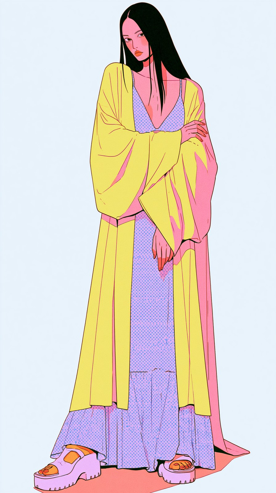
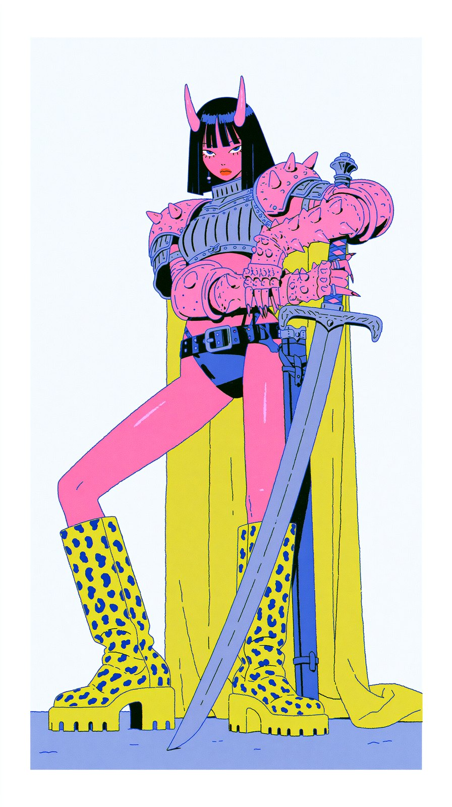
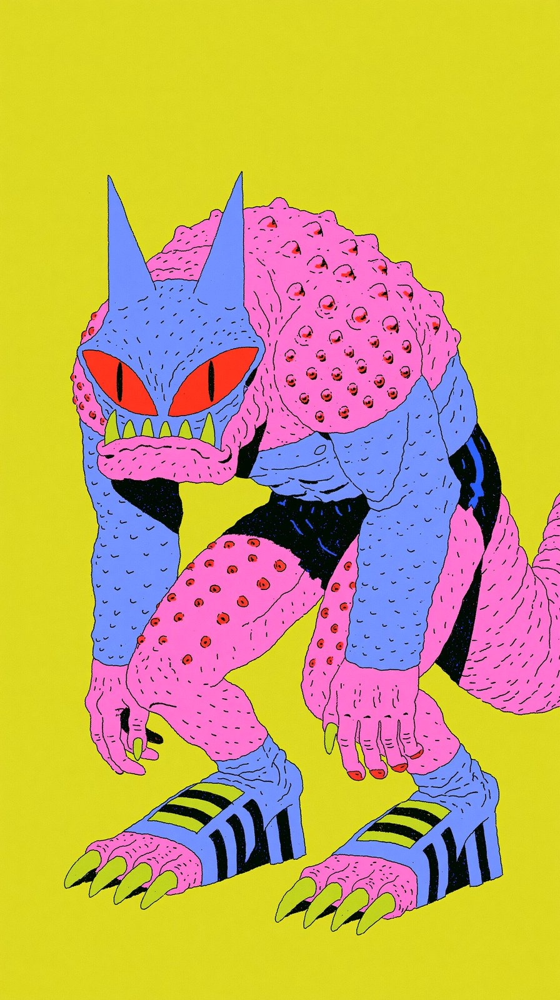
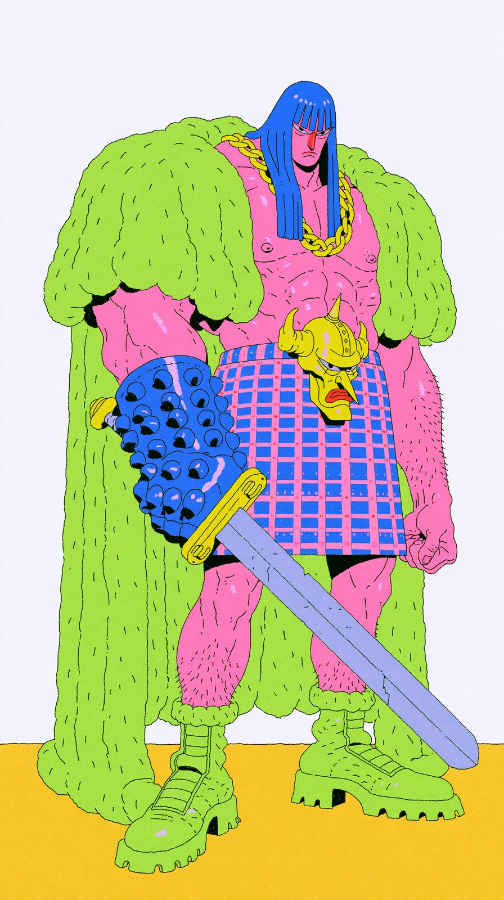
The Woman
The one everybody assumes is the damsel. The prompt asks for nothing heroic at all — ordinary clothes, a dress, cute but vulnerable — because the whole joke depends on her looking exactly like the person this genre would rescue.
Midjourney prompt — the woman
prompt for the woman that needs to be rescue a beautiful lady from the elites, cute but vulnerable, dressed in regular clothes, a dress, full body shot, white backdrop --ar 9:16 --sref 4224851805 1844671166 --raw --v 8.1 --stylize 200 --hd --profile 1tc4lxf
The Warrior
The monster's true form, generated as her own character rather than as a variation. Same two style codes as the woman, which keeps the two of them looking like they belong in the same frame — useful, given where the story ends up.
Midjourney prompt — the warrior
the main woman not ransform as a monster unique character design, main character vibes, strong, cool warrior, holding a sword, white backdrop, a beautiful woman with small horns, full body shot, relax position, holding a sword --ar 9:16 --sref 4224851805 1844671166 --raw --v 8.1 --stylize 200 --hd --profile 1tc4lxf
The Monster
Eleven words of description and a third style code. The platform sneakers were not asked for — they arrived on their own, and they are the single best thing about the design.
Midjourney prompt — the monster
the monster unique character, monster with horns, reptile like, full body pose --ar 9:16 --sref 4224851805 1844671166 3858982196 --raw --v 8.1 --stylize 200 --hd --profile 1tc4lxf
Bragnar and the Belt Head
Note what the prompt asks for: the "hero" — main character vibes, strong, cool warrior, holding a sword. Straight, sincere, no irony. The quotation marks around "hero" are doing all the work. The belt head was never requested; it turned up mounted on the kilt and became the film's best supporting character.
Midjourney prompt — the hero
the "hero" unique character design, main character vibes, strong, cool warrior, holding a sword, white backdrop --ar 9:16 --sref 3858982196 4224851805 1844671166 --raw --v 8.1 --stylize 200 --hd --profile 1tc4lxf
The Neon Forest
One location plate carries the entire film. Twelve words, 16:9, and the instruction that matters most: location only. No figures, no scale reference, nothing for the video model to mistake for a character later.
Midjourney prompt — the location
location forest at down large fantasy tree, location only --ar 16:9 --sref 3858982196 4224851805 1844671166 --raw --v 8.1 --stylize 200 --hd --profile 1tc4lxf
Eight Seconds, Free
The whole film was shaped by a one day promotion.
Higgsfield ran a free day. The catch: Seedance 2.0 at 720p, eight seconds, and nothing else. Normal practice here is fifteen seconds at a time — but you don't always get the chance of free credits, so you take the eight and work around it.
That ceiling is the reason this film looks the way it does. Eight seconds is not enough room for a beat to breathe, so every prompt had to carry more than one. Some hold two or three shots inside a single generation. Others take one event and split it across two prompts that were written to be cut together. The constraint stopped being a limit somewhere around the third shot and started being the grammar.
Write the shots
Story order, camera angles and timing planned per beat before any prompt existed.
Build the prompt
A purpose built Seedance skill turns each beat into a structured prompt: art style, environment, context, blocking, shot, lighting, physics, audio.
Generate — Higgsfield
Seedance 2.0, 720p, high bitrate, eight seconds. Multiple runs per beat, references attached every time.
Edit — Premiere
Best takes cut together, sound design, timing tightened. Everything shot and cut in a single day.
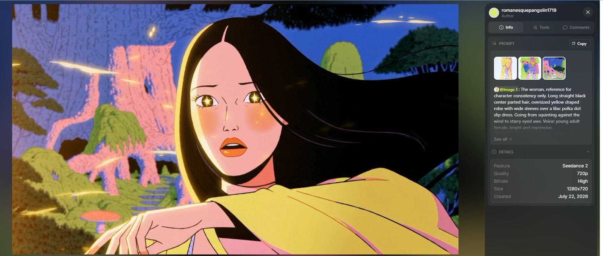
The Film, Prompt by Prompt
Twelve beats in story order — with every iteration, not just the keepers.
What follows is the whole film in sequence. Where a beat was attempted more than once, every attempt is here, because the differences between two runs of the same idea are where the actual craft lives.
Reference tags have been normalised to @IMAGE1, @IMAGE2 and so on for readability — they must always run sequentially with no gaps. Attach your own references in that order and these prompts will work as written.
A woman is hauled across the forest floor on her back, screaming for anyone. The thing dragging her is not remotely bothered. The comedy is entirely in the mismatch, and the blocking protects it: for the first half of the shot the dragger is nothing but a clawed hand at the edge of frame with the arm cropped and its owner off screen.
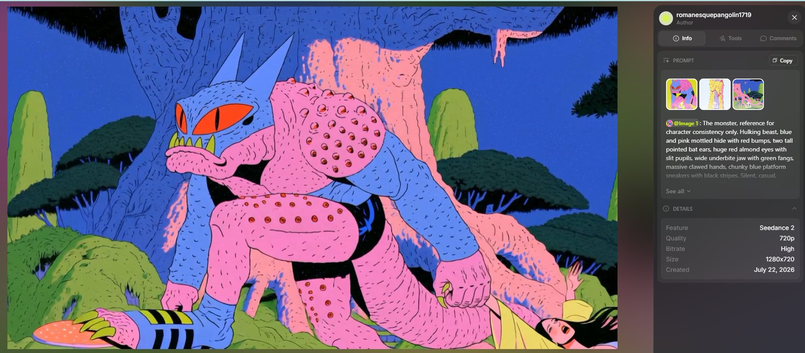
Seedance 2.0 prompt — the drag, iteration A
@IMAGE1: The monster, reference for character consistency only. Hulking beast, blue and pink mottled hide with red bumps, two tall pointed bat ears, huge red almond eyes with slit pupils, wide underbite jaw with green fangs, massive clawed hands, chunky blue platform sneakers with black stripes. Silent, casual, bored, like this is routine. @IMAGE2: The woman, reference for character consistency only. Long straight black center parted hair, oversized yellow draped robe with wide sleeves over a lilac polka dot slip dress, platform sandals. Pure terror and panic. Voice: young adult female, bright and expressive, screaming. @IMAGE3: The neon forest, environment reference. ART STYLE 2D animation with strong multiplane depth, flat bold cel shaded characters over layered painterly backgrounds, thick clean linework, vivid neon palette matching the references. Shallow depth of field, backgrounds streak soft while the subjects stay razor sharp. Dynamic anime camera, fast tracking. Color temperature: neutral on the characters, cool blue only in the background night. ENVIRONMENT Environment as seen in @IMAGE3. Deep blue night, moss, roots and mushrooms streaking past as soft blur. CONTEXT A monster drags a screaming woman through the forest by her wrist. It is completely casual about it. She is not. BLOCKING Shot 1: the woman on her back on the forest floor, dragged arm first from frame right toward frame left. One arm is stretched taut above her head toward frame left, a massive pink clawed hand clamped around her wrist at the far left frame edge, arm cropped, owner off screen. Her head and body trail behind the pulled arm, she faces up and toward camera, her free hand grabbing at roots as they slip past. Shot 2: the monster in close up walking toward frame left, her wrist gripped in its trailing hand, facing frame left, unbothered. SHOT 35mm, close ups only. Shot 1 Purpose: her panic, the unseen dragger. Type: tight close up on her face and upper body, camera low at ground level. Movement: fast sideways tracking right to left, locked to her speed. She is hauled along the ground by her outstretched arm toward frame left, her body sliding on her back behind the pulled wrist, moss and roots streaking as soft blur, her long black hair dragging and whipping under her, the yellow robe bunching as the ground rakes it, her free hand snatching at passing roots that tear out of her grip one after another, screaming: HELP! SOMEBODY! ANYBODY! HEEELP! She never stands, never crawls, only slides, towed by the wrist. Only the clawed hand on her wrist is visible at the left frame edge. Duration: 4 seconds. Shot 2 Purpose: reveal the dragger, casual as anything. Type: tight close up on the monster, chest and head filling the frame, camera low tracking alongside it. Movement: cut to the monster in close up mid stride, walking steadily toward frame left, tracking with it at its pace, one massive arm trailing behind it holding her wrist, her flailing free arm and streaming black hair entering the bottom right corner of frame while she keeps screaming off frame, and the monster is completely unbothered, huge red eyes half lidded and forward, bat ears relaxed, breathing slow, one lazy blink, dragging her like luggage, jaw slack in mild boredom as it walks. It never looks back at her. Duration: 4 seconds. LIGHTING Neutral key on both characters so their colors match the references exactly, never tinted blue. Cool blue night in the background only, soft neon pink bounce from the roots. PHYSICS Her body is dead weight towed over roots on her back, the pulled arm taut, hair and robe dragging against the motion. The monster's stride is heavy and unhurried, her body jolts with each of its steps. AUDIO NO MUSIC. Sound effects and her voice only.
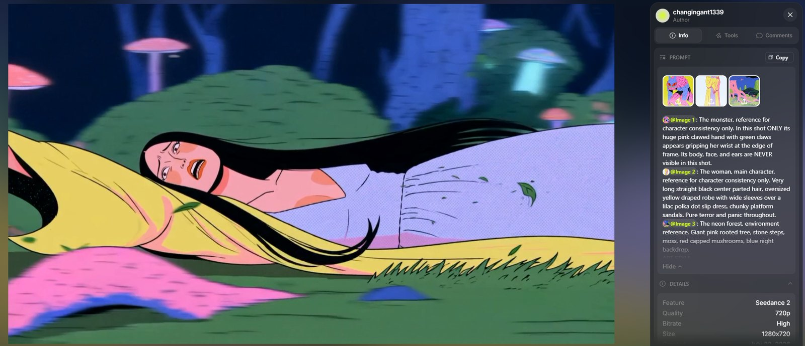
Seedance 2.0 prompt — the drag, iteration B
@IMAGE1: The monster, reference for character consistency only. In this shot ONLY its huge pink clawed hand with green claws appears gripping her wrist at the edge of frame. Its body, face, and ears are NEVER visible in this shot. @IMAGE2: The woman, main character, reference for character consistency only. Very long straight black center parted hair, oversized yellow draped robe with wide sleeves over a lilac polka dot slip dress, chunky platform sandals. Pure terror and panic throughout. @IMAGE3: The neon forest, environment reference. Giant pink rooted tree, stone steps, moss, red capped mushrooms, blue night backdrop. ART STYLE 2D animation with strong multiplane depth, flat bold cel shaded characters over layered painterly backgrounds, thick clean linework, vivid neon palette matching the references. Shallow depth of field, background layers fall soft and blurry while she stays razor sharp. Dynamic anime camera energy, fast tracking, quick speed shifts. One single continuous unbroken shot, a true oner, the camera never cuts and never jumps, it flows through the whole scene in one move. Color temperature: cool. ENVIRONMENT Environment as seen in @IMAGE3. Deep blue night forest, faint drifting spores in the air, mushrooms and pink roots streaking past as soft foreground and background blur. CONTEXT A woman is being dragged through a strange neon forest by something unseen. We stay on her. Whatever has her is never shown. BLOCKING The woman is on her back on the forest floor, being dragged from frame right toward frame left, feet first toward the unseen dragger off frame left. Her head and shoulders fill the frame, she faces up and toward camera. One massive pink clawed hand grips her right wrist at the far left edge of frame, arm cropped, its owner completely off screen. Her free left arm reaches back toward camera, toward frame right. SHOT 35mm, tight close up on her face and upper body, camera low at ground level. The camera opens tight on her terrified face as she is dragged fast from frame right to frame left across the mossy ground, tracking with her in the same low sideways move, matching her speed so she stays locked in frame while moss, mushrooms and pink roots streak past as soft blur, her long black hair whipping around her face, the yellow robe dragging and snagging on roots, she screams: HELP! SOMEBODY! ANYBODY! then in the same unbroken move the camera surges slightly ahead and reveals only the huge pink clawed hand clamped on her wrist at the left edge of frame, never more than the hand, then drops back level with her face as she twists, kicks and claws at the dirt with her free hand, dirt and leaves kicking up around her, then the drag suddenly speeds up, the camera whips faster to keep pace, her hair flares across the lens for a beat, and the shot ends still tracking, still screaming, the dragger never shown. One continuous flowing take throughout. Duration: 8 seconds. LIGHTING Cool blue moonlight from above as the key, soft neon pink bounce from the giant roots filling her face, mushroom caps glowing faintly in the blur. No warm light, no glam beauty lighting. PHYSICS Her body has real weight, shoulders and hips bumping over roots as she slides. Hair and robe fabric trail and whip with the drag, dirt and leaves scatter behind her. AUDIO NO MUSIC. Sound effects and their voices only.
Hero entrance grammar played completely straight so the joke can undercut it: boots slam into frame at ground level, a whip tilt travels up the body, the camera lands on his face from below, the greatsword goes into the earth. Then the camera drops to kilt level and the belt head corrects the record. His face is withheld for the punchline — you get only a clenching fist at the top of frame, and he never looks down.
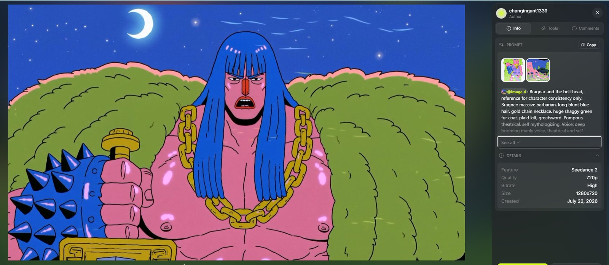
Seedance 2.0 prompt — Bragnar's entrance
@IMAGE1: Bragnar and the belt head, reference for character consistency only. Bragnar: massive barbarian, long blunt blue hair, gold chain necklace, huge shaggy green fur coat, plaid kilt, greatsword. Pompous, theatrical, self mythologizing. Voice: deep booming manly voice, theatrical and self important, middle aged, slight gravelly rasp. The belt head: small yellow horned head mounted on the front of his kilt, alive, unimpressed. Voice: flat deadpan male voice, dry and tired, slightly nasal, mid tone. @IMAGE2: The neon forest, environment reference. Giant pink rooted tree, moss, glowing mushrooms, blue night backdrop. ART STYLE 2D animation with strong multiplane depth, flat bold cel shaded characters over layered painterly backgrounds, thick clean linework, vivid neon palette matching the references. Shallow depth of field, background falls soft while he stays razor sharp. Dynamic anime camera, whip tilts, quick speed shifts. One single continuous unbroken shot, a true oner, the camera never cuts and never jumps, it flows through the whole scene in one move. Color temperature: cool. ENVIRONMENT Environment as seen in @IMAGE2. Deep blue night, drifting spores, faint mushroom glow. CONTEXT A pompous barbarian hero makes his grand entrance into the forest to rescue a screaming woman heard in the distance. He is alone with the living head on his belt. BLOCKING Bragnar alone in a mossy clearing, frame center, body angled left to right, facing frame right toward distant screams off frame right. The belt head hangs at the front of his kilt, facing camera. They hold these positions the whole shot. SHOT 35mm, heroic low angle throughout. The camera opens low in the moss as Bragnar's giant boots slam into frame kicking up leaves and dirt, then in the same unbroken move a fast whip tilt travels up his body, kilt, gold chain, fur coat flaring, and lands on his face from below in full heroic low angle as he plants the greatsword into the earth and bellows: Fear not, lady!! It is I, BRAGNAR THE MAGNIFICENT, hero of a thousand rescues! Wind blows his blue hair and coat fur while he holds the pose, chest out, chin high, still facing frame right, then the camera keeps flowing without cutting and drops straight back down to kilt level, settling tight on the belt head as it deadpans to camera: Nine. It is nine rescues. I was there. Then the camera tilts up just enough to catch Bragnar's fist clenching at the top of frame as he growls without looking down: A thousand. One continuous flowing take throughout. Duration: 8 seconds. LIGHTING Cool blue moonlight key from above, neon pink bounce from the giant roots on one side of his face, mushroom glow in the soft background. No warm light. PHYSICS His landing is heavy, ground impact scatters leaves. Fur coat and hair ripple in the wind, the planted sword stays rigid in the earth. AUDIO NO MUSIC. Sound effects and their voices only.
Instead of rescuing anyone, he does a routine. Flex, kiss the bicep, pec pops, a strutting dance stomp, and a shampoo commercial hair flip in fake slow motion. Two versions exist: one played directly into the lens with no audience at all, one played to an audience of three who all hate it.
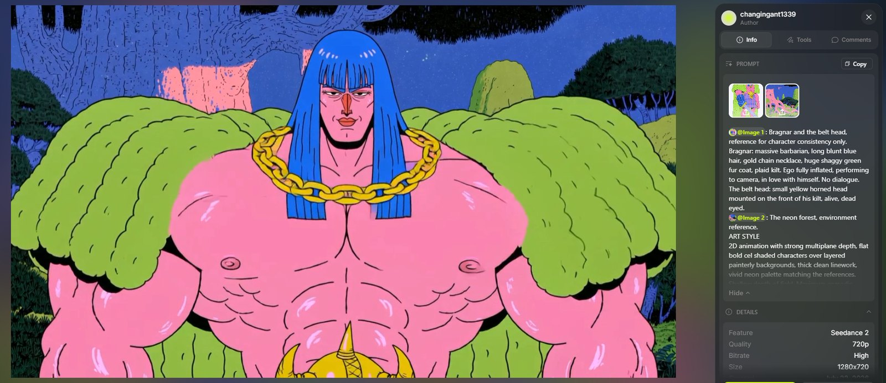
Seedance 2.0 prompt — the performance, iteration A
@IMAGE1: Bragnar and the belt head, reference for character consistency only. Bragnar: massive barbarian, long blunt blue hair, gold chain necklace, huge shaggy green fur coat, plaid kilt. Ego fully inflated, performing to camera, in love with himself. No dialogue. The belt head: small yellow horned head mounted on the front of his kilt, alive, dead eyed. @IMAGE2: The neon forest, environment reference. ART STYLE 2D animation with strong multiplane depth, flat bold cel shaded characters over layered painterly backgrounds, thick clean linework, vivid neon palette matching the references. Shallow depth of field. Maximum comedic anime energy: snap zooms, crash push ins, whip moves, speed ramps, sparkle glints. One single continuous unbroken shot, a true oner, the camera never cuts and never jumps, every move is a fast camera motion within one flowing take. Color temperature: cool. ENVIRONMENT Environment as seen in @IMAGE2. Deep blue night, drifting spores, faint mushroom glow. CONTEXT The hero performs his muscle routine for the camera like the world's most confident shampoo commercial. Only him and the belt head exist. No other characters, no reactions. BLOCKING Bragnar alone, frame center, facing camera the entire shot, performing directly into the lens. The belt head hangs at the front of his kilt. SHOT 35mm, tight and punchy, the camera constantly moving. The camera CRASHES IN on Bragnar's flexed bicep filling the frame as he kisses it with a loud smack, sparkle glint popping, then WHIPS across his chest to the other bicep for the second kiss, then SNAP ZOOMS back to his chest as he bounces his pecs one at a time, left, right, left, the gold chain jumping with each pec pop, then he tosses his head back and the shot SPEED RAMPS into dramatic slow motion as his long blue hair rises and fans out, one bright glint sliding along the floating strands, then ramps back to real time as the hair whips down and settles perfectly, and the camera CRASHES INTO AN EXTREME CLOSE UP of just his eye and eyebrow filling the entire frame as he WINKS, one huge punchy wink with an audible ting and a white sparkle flying off the eyelash, then the camera snaps back just enough for his smug grin as he blows a kiss at the lens, and drops for half a beat to the belt head staring dead eyed into camera before popping back up to his self satisfied smile. One continuous flowing take throughout. Duration: 8 seconds. LIGHTING Cool blue moonlight key, neon pink bounce from the roots, exaggerated white sparkle glints on biceps, pecs, teeth, chain, hair and the wink. No warm light. PHYSICS Pecs bounce with real mass, chain jumps with each pop, hair carries weight through the speed ramp, the coat sways with every camera whip. AUDIO NO MUSIC. Sound effects only.
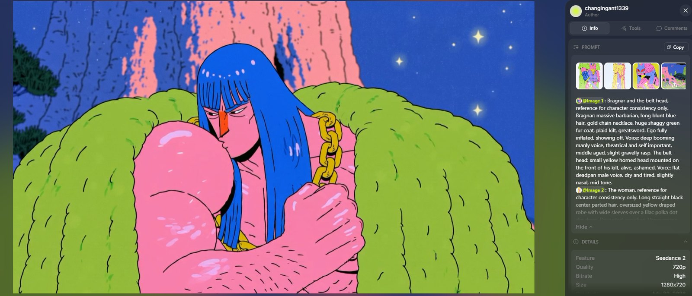
Seedance 2.0 prompt — the performance, iteration B
@IMAGE1: Bragnar and the belt head, reference for character consistency only. Bragnar: massive barbarian, long blunt blue hair, gold chain necklace, huge shaggy green fur coat, plaid kilt, greatsword. Ego fully inflated, showing off. Voice: deep booming manly voice, theatrical and self important, middle aged, slight gravelly rasp. The belt head: small yellow horned head mounted on the front of his kilt, alive, ashamed. Voice: flat deadpan male voice, dry and tired, slightly nasal, mid tone. @IMAGE2: The woman, reference for character consistency only. Long straight black center parted hair, oversized yellow draped robe with wide sleeves over a lilac polka dot slip dress. Disgusted, recoiling. Voice: young adult female, bright and expressive. @IMAGE3: The monster, reference for character consistency only. Hulking beast, blue and pink mottled hide, tall pointed bat ears, huge red almond eyes with slit pupils, wide underbite jaw with green fangs. Utterly unamused, silent, never speaks. @IMAGE4: The neon forest, environment reference. Giant pink rooted tree, moss, glowing mushrooms, blue night backdrop. ART STYLE 2D animation with strong multiplane depth, flat bold cel shaded characters over layered painterly backgrounds, thick clean linework, vivid neon palette matching the references. Shallow depth of field, backgrounds fall soft while faces stay razor sharp. Dynamic anime camera, whip pans, fake slow motion beats. One single continuous unbroken shot, a true oner, the camera never cuts and never jumps, it flows through the whole scene in one move. Color temperature: cool. ENVIRONMENT Environment as seen in @IMAGE4. Deep blue night, drifting spores, faint mushroom glow. CONTEXT The hero completely misreads the standoff and starts showing off his muscles and hair to his audience. Nobody is impressed. BLOCKING Bragnar at frame center facing camera, performing. The belt head hangs at the front of his kilt facing camera. The woman stands off to frame right several steps away, facing frame left toward Bragnar, with the monster looming close behind her shoulder, also facing frame left toward Bragnar. They hold these positions the whole shot. SHOT 35mm, tight close ups only. The camera opens close on Bragnar from the chest up as he flexes both biceps one after the other, kisses one bicep, then does a cocky little strutting dance stomp side to side, gold chain bouncing, then whips his head back so his long blue hair fans out and floats down in fake slow motion like a shampoo commercial, chest out, eyebrows waggling at his audience, and in the same unbroken move the camera dips down past his kilt to catch the belt head with its eyes squeezed shut in deep shame muttering: I cannot watch. Then the camera keeps flowing without cutting and whip pans to frame right, landing in a tight close up on the woman's face as she recoils, nose scrunched, lip curled, leaning away, and says flatly: yuck. Behind her shoulder in soft focus the monster's huge red eyes sit at half lid, supremely unamused, and give one slow unimpressed blink. One continuous flowing take throughout. Duration: 8 seconds. LIGHTING Cool blue moonlight key, neon pink bounce from the roots, a faint vain sparkle glinting off his hair at the top of the hair flip. No warm light. PHYSICS His hair has real weight and floats down strand by strand after the flip, the fur coat sways with the dance stomps, the chain bounces on his chest. AUDIO NO MUSIC. Sound effects and their voices only.
The premise flips here. She has watched the entire performance and made her decision. The direction asks for two contradictory things at once — shock and disgust — played against completely elegant movement, and the joke lands in the gap between her face and her hands.
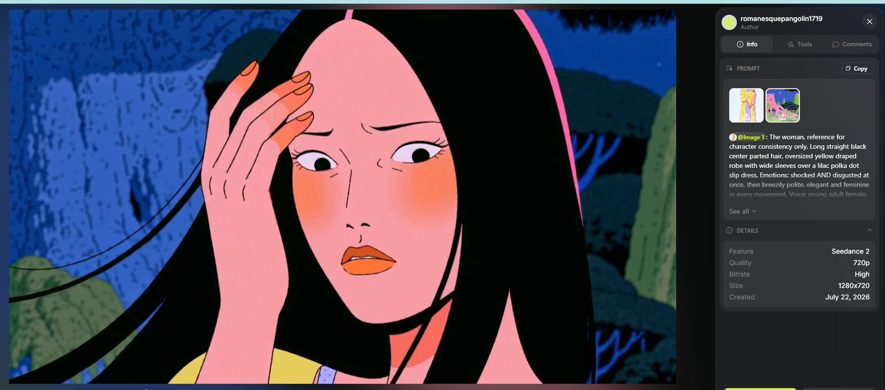
Seedance 2.0 prompt — the decline
@IMAGE1: The woman, reference for character consistency only. Long straight black center parted hair, oversized yellow draped robe with wide sleeves over a lilac polka dot slip dress. Emotions: shocked AND disgusted at once, then breezily polite, elegant and feminine in every movement. Voice: young adult female, bright and expressive. @IMAGE2: The neon forest, environment reference. ART STYLE 2D animation with strong multiplane depth, flat bold cel shaded characters over layered painterly backgrounds, thick clean linework, vivid neon palette matching the references. Shallow depth of field. Deadpan comic timing, locked frame. The wind is drawn as classic 2D anime wind effects: thin curved hand drawn wind streak lines and long swoosh strokes drifting across the frame, cel animated. NO leaves, NO dust, NO debris, NO particles, only drawn wind lines, hair and fabric. Color temperature: neutral on her, cool blue only in the background night. ENVIRONMENT Environment as seen in @IMAGE2. Deep blue night, a steady wind rendered purely as stylized 2D wind streak lines flowing across frame. No glow, no sparkles, no leaves, no dust. CONTEXT Off frame, the hero has just performed a deeply weird dance move. She watched all of it. She has made her decision. He is never shown. BLOCKING The woman alone in frame the entire shot, tight close up, facing frame left toward the off screen hero. The hero is always off frame left and never shown. She never moves from her spot. SHOT 35mm, one tight close up on her face, camera locked the whole shot. From the first frame her face holds shock and disgust at the same time: eyes wide in disbelief, mouth open, nose scrunched, staring toward frame left. Thin hand drawn 2D wind streak lines sweep continuously across the frame from frame left, streaming her long black hair sideways. Then, with graceful feminine composure completely at odds with her face, she slowly lifts one hand and sweeps her hair back from her face and over her shoulder in one smooth elegant motion, wrist soft, fingers delicate, her expression never softening, and she lets out one small flat: yuk. A beat. Then her whole face resets into a bright, breezy, almost apologetic politeness, chin lifting, a courteous little smile that does not reach her eyes, and she says lightly, with a small dismissive wave of her hand: Actually, I am fine here. No need for a rescue... but thanks. She holds the polite smile toward frame left, the wind lines still streaming her hair, one eyebrow arching just slightly as the shot ends. One locked take throughout. Duration: 8 seconds. LIGHTING Neutral soft key light on her face so her skin keeps its natural warm pink tone from the reference, never tinted blue. The cool blue night lives only in the background and as a thin blue rim on the edge of her hair. Soft neon pink bounce from the roots as fill. No glow effects, no aura, no sparkles. Flat quiet night light only. PHYSICS Wind exists only as stylized 2D streak lines, her hair streaming and responding with real weight, the hair sweep one smooth continuous feminine motion, the hand wave small and crisp. No leaves, no dust, no particles anywhere. AUDIO NO MUSIC. Sound effects and her voice only.
A tight profile two shot, both faces locked inches apart for the whole take. The monster roars point blank, the roar cuts off, and then the shot does something most prompts never bother to specify: it holds on silence. His hair flops down, the fear arrives in physical detail, and only after a long scared beat does he speak.
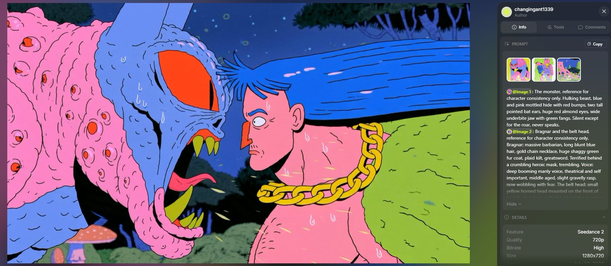
Seedance 2.0 prompt — the roar
@IMAGE1: The monster, reference for character consistency only. Hulking beast, blue and pink mottled hide with red bumps, two tall pointed bat ears, huge red almond eyes, wide underbite jaw with green fangs. Silent except for the roar, never speaks. @IMAGE2: Bragnar and the belt head, reference for character consistency only. Bragnar: massive barbarian, long blunt blue hair, gold chain necklace, huge shaggy green fur coat, plaid kilt, greatsword. Terrified behind a crumbling heroic mask, trembling. Voice: deep booming manly voice, theatrical and self important, middle aged, slight gravelly rasp, now wobbling with fear. The belt head: small yellow horned head mounted on the front of his kilt, alive, long suffering. Voice: flat deadpan male voice, dry and tired, slightly nasal, mid tone. @IMAGE3: The neon forest, environment reference. Giant pink rooted tree, moss, glowing mushrooms, blue night backdrop. ART STYLE 2D animation with strong multiplane depth, flat bold cel shaded characters over layered painterly backgrounds, thick clean linework, vivid neon palette matching the references. Shallow depth of field, background falls soft while faces stay razor sharp. Comic timing built on beats and holds. One single continuous unbroken shot, a true oner, the camera never cuts and never jumps, it flows through the whole scene in one move. Color temperature: cool. ENVIRONMENT Environment as seen in @IMAGE3. Deep blue night, drifting spores, faint mushroom glow. CONTEXT The monster roars point blank in the hero's face. His courage dies on the spot. He shakes, he talks, and his body quietly surrenders. BLOCKING Tight profile two shot. The monster's huge head at frame left in profile facing frame right. Bragnar at frame right in profile facing frame left. They face each other, inches apart, and hold this facing the whole shot. The belt head hangs at the front of his kilt below frame until the camera finds it at the end. SHOT 35mm, tight close ups only. The camera opens in a tight profile two shot, the monster's huge face at frame left and Bragnar's face at frame right, eye to eye, then the monster ROARS point blank into his face, a deafening blast, jaw stretching wide, green fangs bared, the roar blasting his long blue hair and fur collar straight back horizontal, then the roar cuts off. A beat of dead silence. His hair flops down. Then the camera pushes in slightly on Bragnar's face and holds there as the fear takes him, eyes huge, pupils shrunk to dots, a cold sweat drop sliding down his temple, his whole body trembling in a small constant shiver, the gold chain faintly rattling against his chest, jaw quivering, and after the long scared hold he swallows and forces the words out, voice wobbling with fake wisdom: You know... violence is never the answer. Let us... talk. As scholars. Then the camera keeps flowing without cutting and slides straight down his still subtly trembling body to the belt head at the front of his kilt, where a dark wet stain is slowly blooming outward across the plaid fabric around the little head, one faint wisp of steam, the belt head grimacing as it says flatly: Ugh. It is getting humid in here. The trembling never fully stops. One continuous flowing take throughout. Duration: 8 seconds. LIGHTING Cool blue moonlight key, neon pink bounce from the roots splitting the two profiles, the monster's red eyes glowing, the sweat drop catching the light. No warm light. PHYSICS The roar has hurricane force, hair and fur blown flat back, spit flecks flying. His trembling is small, constant and full body, the chain rattles softly, the wet stain spreads slowly through the plaid weave. AUDIO NO MUSIC. Sound effects and their voices only.
Convinced the monster is an enchantment, he demands it drop the disguise. The camera then does the best move in the film: it rides along his outstretched pointing arm like a rail, past the fist and fingertip, across the gap, and lands on the monster's face. Two characters, two emotional beats, one lens move, no cut.
And because the monster never speaks, its entire performance is written as face and ear choreography.
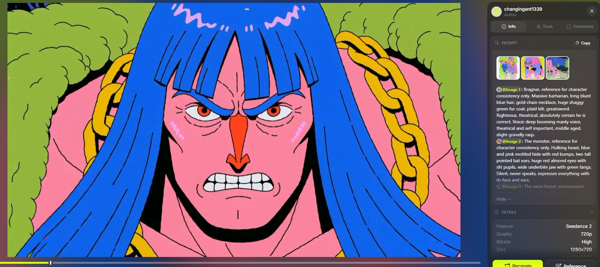
Seedance 2.0 prompt — show your true form
@IMAGE1: Bragnar, reference for character consistency only. Massive barbarian, long blunt blue hair, gold chain necklace, huge shaggy green fur coat, plaid kilt, greatsword. Righteous, theatrical, absolutely certain he is correct. Voice: deep booming manly voice, theatrical and self important, middle aged, slight gravelly rasp. @IMAGE2: The monster, reference for character consistency only. Hulking beast, blue and pink mottled hide with red bumps, two tall pointed bat ears, huge red almond eyes with slit pupils, wide underbite jaw with green fangs. Silent, never speaks, expresses everything with its face and ears. @IMAGE3: The neon forest, environment reference. Giant pink rooted tree, moss, glowing mushrooms, blue night backdrop. ART STYLE 2D animation with strong multiplane depth, flat bold cel shaded characters over layered painterly backgrounds, thick clean linework, vivid neon palette matching the references. Shallow depth of field, background falls soft while faces stay razor sharp. Dynamic anime camera, fast racing moves. One single continuous unbroken shot, a true oner, the camera never cuts and never jumps, it flows through the whole scene in one move. Color temperature: cool. ENVIRONMENT Environment as seen in @IMAGE3. Deep blue night, drifting spores, faint mushroom glow. CONTEXT The hero is convinced the monster is an enchanted illusion and demands it reveal its true form. The monster is genuinely confused, then deeply, visibly done with him. BLOCKING Bragnar at frame right facing frame left toward the monster, pointing arm extended toward frame left. The monster stands at frame left facing frame right toward Bragnar. They face each other the whole shot, several steps apart. SHOT 35mm, tight close ups only. The camera opens tight on Bragnar's face as he bellows with full righteous theater, spit flying, veins standing out on his neck: Enough tricks, beast! I know an enchantment when I smell one! and his arm shoots out past the lens pointing toward frame left as he roars: SHOW YOUR TRUE FORM! then in the same unbroken move the camera races along his outstretched pointing arm like a rail, past his fist and fingertip, flying across the gap between them, and lands in a tight close up on the monster's huge face. A beat. The monster blinks once, then its head cants slowly far over to one side in genuine confusion, one tall bat ear standing straight up, the other folding down, red slit pupils shrinking slightly, holding the confused tilt for a long beat, then the camera keeps flowing without cutting and pushes in slightly as the confusion melts into the slowest most exhausted eye roll, lids sliding to half mast, pupils rolling up and away, ears settling flat back. Hold there. One continuous flowing take throughout. Duration: 8 seconds. LIGHTING Cool blue moonlight key, neon pink bounce from the roots on both faces, the monster's red eyes the brightest thing in frame. No warm light. PHYSICS Bragnar's hair and coat shake with the force of the bellow, spit flecks catch the light. The monster's ears move with real cartilage weight, slow and expressive. AUDIO NO MUSIC. Sound effects and their voices only.
The pivot, and the shot that earns the film its other title. Both references are declared as the same character, before and after — that single sentence is what stops the model from reading the change as a cut between two unrelated designs. She is alone in frame throughout, eyes closed for the first three seconds, and the take ends on a low hero angle looking up at her.
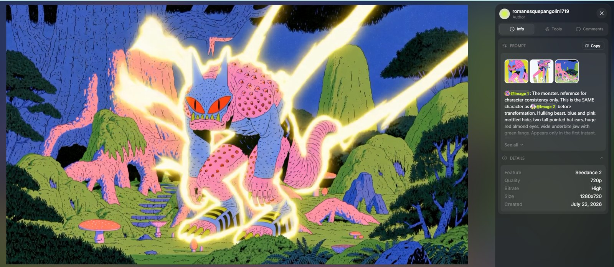
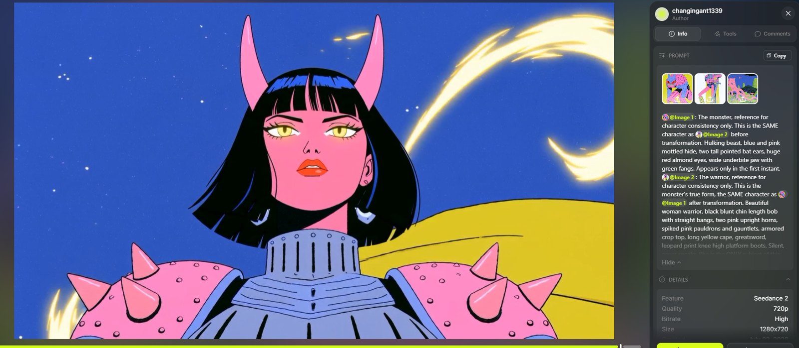
Seedance 2.0 prompt — the transformation, runs 01 and 02
@IMAGE1: The monster, reference for character consistency only. This is the SAME character as @IMAGE2 before transformation. Hulking beast, blue and pink mottled hide, two tall pointed bat ears, huge red almond eyes, wide underbite jaw with green fangs. Appears only in the first instant. @IMAGE2: The warrior, reference for character consistency only. This is the monster's true form, the SAME character as @IMAGE1 after transformation. Beautiful woman warrior, black blunt chin length bob with straight bangs, two pink upright horns, spiked pink pauldrons and gauntlets, armored crop top, long yellow cape, greatsword, leopard print knee high platform boots. Silent, never speaks. She is the ONLY subject of this entire video. @IMAGE3: The neon forest, environment reference. ART STYLE 2D animation with strong multiplane depth, flat bold cel shaded characters over layered painterly backgrounds, thick clean linework, vivid neon palette matching the references. Shallow depth of field. The transformation energy is drawn as bright golden hand drawn energy streaks, long cel animated ribbons of light streaming and whipping with the wind, radiating outward from her body. NO leaves, NO dust, NO petals, NO particles, only energy streaks, wind, hair and fabric. Dynamic anime camera. One single continuous unbroken shot, a true oner, the camera never cuts and never jumps. Color temperature: cool, with bright golden energy streaks as the accent. ENVIRONMENT Environment as seen in @IMAGE3. Deep blue night, strong wind, golden 2D energy ribbons radiating outward from her. CONTEXT The monster transforms quickly into the warrior. This entire video is her and only her. No other characters, no reaction shots, no cutaways, no other faces ever. BLOCKING The warrior alone at frame center for the entire shot, standing. The camera moves around her body dynamically and ends low and CLOSE, looking up at her from chest height. Absolutely no other characters appear at any point. SHOT 35mm, dynamic and close on HER throughout, her body always filling the frame. The camera is already sweeping around the monster as golden energy ignites and within the first instant the shape reforms into the warrior, fast and clean, and for the first three seconds she stands with her EYES CLOSED as the camera travels over her in motion, gliding along the spiked pauldrons, the gauntlets, the armored crop top, the yellow cape snapping in the wind, the greatsword in her grip, the leopard platform boots planted wide, golden energy ribbons streaming outward from her silhouette and whipping across frame with the wind, her black bob flowing, then the camera rises back to her face and her eyes SNAP OPEN, locked on, boss confidence, golden light glinting in her irises, gaze hard toward frame right, never blinking, and the camera reacts in the same unbroken move, sweeping around her shoulder and dropping low into a CLOSE UP HERO SHOT, a tight low angle from just below her chest looking up at her face and shoulders filling the frame, chin high, jawline sharp against the night sky, horns rising past the top of frame, the spiked pauldrons framing the bottom edge, cape snapping behind her head, energy streaks still radiating outward around her, and the shot ends holding that tight low hero close up, aura streaming, stare unbroken. Never a wide shot at any point. One continuous flowing take throughout. Duration: 8 seconds. LIGHTING Cool blue moonlight base, golden energy streaks flaring across her armor and rimming the horns, cape and sword, gold glints in her eyes. No flicker, no strobing. PHYSICS Energy ribbons radiate outward with momentum and flow with the wind, hair and cape whip with real weight, boots stay planted. No particles of any kind. AUDIO NO MUSIC. Sound effects only.
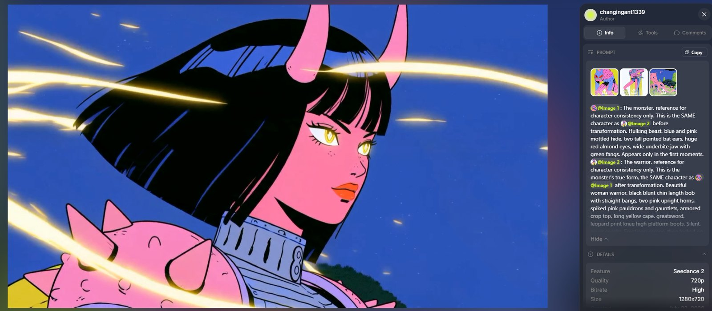
Seedance 2.0 prompt — the transformation, run 03 (revised)
@IMAGE1: The monster, reference for character consistency only. This is the SAME character as @IMAGE2 before transformation. Hulking beast, blue and pink mottled hide, two tall pointed bat ears, huge red almond eyes, wide underbite jaw with green fangs. Appears only in the first moments. @IMAGE2: The warrior, reference for character consistency only. This is the monster's true form, the SAME character as @IMAGE1 after transformation. Beautiful woman warrior, black blunt chin length bob with straight bangs, two pink upright horns, spiked pink pauldrons and gauntlets, armored crop top, long yellow cape, greatsword, leopard print knee high platform boots. Silent, never speaks. Emotions: serene, then locked on, boss confidence. @IMAGE3: The neon forest, environment reference. ART STYLE 2D animation with strong multiplane depth, flat bold cel shaded characters over layered painterly backgrounds, thick clean linework, vivid neon palette matching the references. Shallow depth of field. The transformation energy is drawn as bright golden hand drawn energy streaks, long ribbons of light streaming and whipping horizontally with the wind, cel animated 2D effect strands radiating outward from her body across the whole frame. NO leaves, NO dust, NO petals, NO spores, NO particles, only drawn energy streaks, wind, hair and fabric. Dynamic anime camera. One single continuous unbroken shot, a true oner, the camera never cuts and never jumps. Color temperature: cool, with bright golden energy streaks as the accent. ENVIRONMENT Environment as seen in @IMAGE3. Deep blue night, strong wind, golden 2D energy ribbons streaming outward from her and across the frame with the wind. CONTEXT The monster transforms quickly into its true form. The energy radiates outward with the wind. No other characters, no reactions. BLOCKING The figure alone at frame center the entire shot. The camera moves around her dynamically and ends low, looking up at her. No other characters appear. SHOT 35mm, close and dynamic throughout. The camera is already sweeping around the monster as golden energy streaks ignite along its silhouette and within the first moments the shape dissolves and reforms into the warrior, fast and clean, bat ears becoming pink horns, and for the first three seconds she stands with her EYES CLOSED, serene, the camera circling her close as long golden energy ribbons stream outward from her body and whip horizontally across the frame with the wind, her black bob flowing, strands crossing her face, then her eyes SNAP OPEN, locked on, golden light glinting in her irises, boss confidence, gaze hard and level toward frame right, never blinking, and the camera reacts, swinging around her in the same unbroken move and diving down low, sweeping into a rising hero angle from below as she squares her shoulders, cape snapping behind her in the wind, energy streaks still radiating outward around her silhouette, chin level, eyes still locked, and the shot ends holding on that low hero angle, aura ribbons streaming, her stare unbroken. One continuous flowing take throughout. Duration: 8 seconds. LIGHTING Cool blue moonlight base, the golden energy streaks acting as bright moving accents that flare across her face and rim her horns and cape, gold glints in her eyes. No flicker, no strobing, no lens flares. PHYSICS Energy ribbons flow with the wind direction and radiate outward with real momentum, hair and cape whip and stream with weight. No particles of any kind in the air. AUDIO NO MUSIC. Sound effects only.
The reverse angle on the transformation — and the reason the two prompts were written as a matched pair. This one never shows the transformation at all. Three faces, one at a time, hit by golden light and hurricane wind from off frame left, while the thing causing it stays permanently out of shot.
Seedance 2.0 prompt — the witnesses
@IMAGE1: The woman, reference for character consistency only. Long straight black center parted hair, oversized yellow draped robe with wide sleeves over a lilac polka dot slip dress. Going from squinting against the wind to starry eyed awe. Voice: young adult female, bright and expressive. @IMAGE2: Bragnar and the belt head, reference for character consistency only. Bragnar: massive barbarian, long blunt blue hair, gold chain necklace, huge shaggy green fur coat, plaid kilt. Stunned, slack. Voice: deep booming manly voice, theatrical and self important, middle aged, slight gravelly rasp. The belt head: small yellow horned head mounted on the front of his kilt, alive. Smitten. Silent in this video. @IMAGE3: The neon forest, environment reference. Giant pink rooted tree, moss, glowing mushrooms, blue night backdrop. ART STYLE 2D animation with strong multiplane depth, flat bold cel shaded characters over layered painterly backgrounds, thick clean linework, vivid neon palette matching the references. Shallow depth of field, backgrounds fall soft while faces stay razor sharp. Three locked close ups, faces lit by an off screen transformation. Color temperature: cool, with warm golden light striking every face from off screen. ENVIRONMENT Environment as seen in @IMAGE3. Deep blue night, a hurricane of wind, leaves and glowing spores blasting through every frame from off screen. CONTEXT Off screen, the monster is transforming in a blaze of golden light and wind. We never see it. We only see the three witnesses being hit by the wind and the light, one by one. BLOCKING All three witnesses face frame left toward the off screen transformation. The woman alone in her frame, facing frame left. Bragnar alone in his frame, facing frame left. The belt head on his kilt, tilted toward frame left. The transformation is always off frame left and is never shown. SHOT 35mm, tight close ups only, camera locked with a slight buffeted tremble in the wind. Shot 1 Purpose: the first witness, terror melting into awe. Type: tight close up on the woman's face. Movement: locked frame, slight wind tremble. Golden light flares across her face from frame left, her long black hair and yellow robe blasting back in the strong wind, she squints against it, one sleeve raised to shield her eyes, then slowly lowers the sleeve as her eyes go wide and starry, pupils sparkling with reflected gold, lips parting as she breathes: wow... Duration: 4 seconds. Shot 2 Purpose: second witness, the belt head falls in love. Type: tight close up on the belt head at kilt level. Movement: locked frame, slight wind tremble. Wind whips the plaid kilt fabric around it, the little horned head tilted far toward frame left into the golden light, eyes enormous, jaw slowly dropping open, utterly silent, smitten. Duration: 2 seconds. Shot 3 Purpose: third witness, the hero deflates. Type: tight close up on Bragnar's face. Movement: locked frame, slight wind tremble. His blue hair blown straight back, fur coat collar rippling, righteous scowl collapsing into slack stunned awe, golden light washing his face, and he murmurs barely audible: quite. Duration: 2 seconds. LIGHTING Warm golden transformation light as the key on every face, always from frame left, flickering and intensifying, cool blue night rim behind them. The light source is never shown. PHYSICS Strong continuous wind from frame left, hair, fur, robe and kilt fabric streaming, leaves and glowing spores whipping past every lens. AUDIO NO MUSIC. Sound effects and their voices only.
Four references, three characters staged across one frame, and an entire emotional arc run on a single face in a single take: awe, then a slow look down at the hand on her arm, then up to his face, awe curdling into disgust, then melting into longing as she walks away from him. The camera tracks backward in front of her the whole way, so the move does the editing.
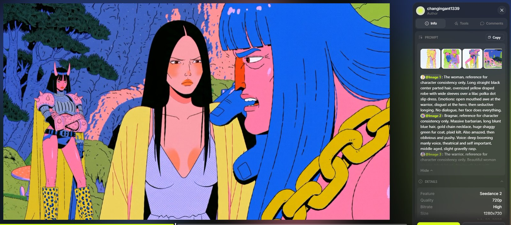
Seedance 2.0 prompt — the refusal
@IMAGE1: The woman, reference for character consistency only. Long straight black center parted hair, oversized yellow draped robe with wide sleeves over a lilac polka dot slip dress. Emotions: open mouthed awe at the warrior, disgust at the hero, then seductive longing. No dialogue, her face does everything. @IMAGE2: Bragnar, reference for character consistency only. Massive barbarian, long blunt blue hair, gold chain necklace, huge shaggy green fur coat, plaid kilt. Also amazed, then oblivious and pushy. Voice: deep booming manly voice, theatrical and self important, middle aged, slight gravelly rasp. @IMAGE3: The warrior, reference for character consistency only. Beautiful woman warrior, black blunt chin length bob with straight bangs, two pink upright horns, spiked pink pauldrons and gauntlets, armored crop top, long yellow cape, leopard print platform boots. Silent, never speaks, calm seductive confidence, answers only with her eyes. @IMAGE4: The neon forest, environment reference. ART STYLE 2D animation with strong multiplane depth, flat bold cel shaded characters over layered painterly backgrounds, thick clean linework, vivid neon palette matching the references. Shallow depth of field. Dynamic anime camera following every movement. One single continuous unbroken shot, a true oner, the camera never cuts and never jumps, it flows through the whole scene in one move. Color temperature: cool. ENVIRONMENT Environment as seen in @IMAGE4. Deep blue night, a gentle settling wind after the transformation, calm air. CONTEXT The transformation just ended. Everyone is stunned by the warrior's beauty. The hero tries to leave with the woman. She has other plans. BLOCKING The warrior stands at frame left, facing frame right, calm and still. The woman stands at frame center, facing frame left toward the warrior. Bragnar stands at frame right behind the woman, facing frame left. The woman pulls free of his grip, walks toward frame left, and stops face to face with the warrior, inches apart. They face each other and look only into each other's eyes from then on. Bragnar stays behind at frame right. SHOT 35mm, tight close ups throughout, the camera following every movement. The camera opens close on the woman's face, mouth open in pure awe, eyes shining as she stares toward frame left at the warrior, then drifts to Bragnar beside her, equally slack jawed and amazed, until he shakes it off, clears his throat, grabs the woman's arm and says: Come along, lady! You are rescued! No need to thank me. The camera snaps to her face as she turns her head slowly toward his hand on her arm, then up to his face, her awe curdling into a flat disgusted yuck stare, and she yanks her arm free with one clean pull, turns toward frame left, and walks toward the warrior, the camera tracking backward smoothly in front of her with every step, her expression melting from disgust into seductive longing as she approaches, and she stops face to face with the warrior, inches apart, and the camera slides into a tight profile two shot as they stare into each other's eyes, her lips parted, gaze heavy and seductive, the warrior looking back down at her with calm seductive fire, the faintest smile, one eyebrow lifting, held together in the frame, the air electric between them as the shot ends on the two faces. One continuous flowing take throughout. Duration: 8 seconds. LIGHTING Cool blue moonlight key, neon pink bounce from the roots, a soft golden afterglow still clinging to the warrior's silhouette. No flashing, no sparkles. PHYSICS The arm yank is one clean decisive pull, her robe sways with the walk, hair drifts in the settling wind, both stand grounded and still in the final two shot. AUDIO NO MUSIC. Sound effects and his voice only.
Lip bite, two steps, leap, catch, swing into a bridal carry, the line, the wink, one held look — and then the motion hands off from the actors to the camera, which starts spinning as the kiss lands. Eleven beats in eight seconds, and the line itself is a callback: the thing she was screaming for help about in the first shot has become the flirt.
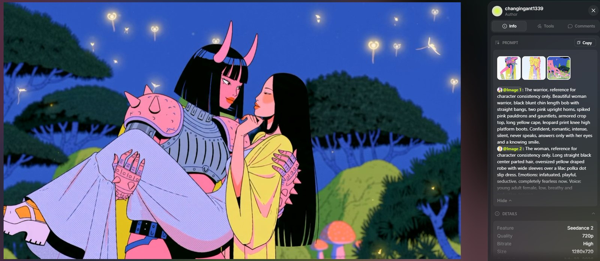
Seedance 2.0 prompt — the leap
@IMAGE1: The warrior, reference for character consistency only. Beautiful woman warrior, black blunt chin length bob with straight bangs, two pink upright horns, spiked pink pauldrons and gauntlets, armored crop top, long yellow cape, leopard print knee high platform boots. Confident, romantic, intense, silent, never speaks, answers only with her eyes and a knowing smile. @IMAGE2: The woman, reference for character consistency only. Long straight black center parted hair, oversized yellow draped robe with wide sleeves over a lilac polka dot slip dress. Emotions: infatuated, playful, seductive, completely fearless now. Voice: young adult female, low, breathy and seductive, teasing. @IMAGE3: The neon forest, environment reference. ART STYLE 2D animation with strong multiplane depth, flat bold cel shaded characters over layered painterly backgrounds, thick clean linework, vivid neon palette matching the references. Shallow depth of field, the world melts into glowing bokeh. Pure sincere romance, swelling and magical. One single continuous unbroken shot, a true oner, the camera never cuts and never jumps, it spins around them in one continuous move. Color temperature: cool, with warm golden magical glow wrapping the couple. ENVIRONMENT Environment as seen in @IMAGE3. Deep blue night dissolving into soft bokeh, magical wind, glowing spores and golden petals swirling. CONTEXT The rescued woman throws herself at her rescuer. A leap, a catch, a seductive line, a look, and a magical kiss. BLOCKING Only two characters in the entire shot. The woman starts a few steps from the warrior at frame right, facing frame left toward her. The warrior stands at frame left facing frame right, arms opening. The woman leaps toward frame left into the warrior's arms and lands carried bridal style, lying across her arms, faces close. From the catch onward they face each other and look only at each other. The camera circles them continuously. No other characters appear, no reactions. SHOT 35mm, tight on them throughout. The camera opens close on the woman as she bites her lip, eyes locked on the warrior, then runs two quick steps and LEAPS toward frame left, robe and hair flying, and the camera whips with her as the warrior catches her effortlessly mid air and swings her around once into a bridal carry, the momentum melting into stillness, the woman already draped luxuriously across the armored arms like she has always belonged there, and she looks up at the warrior through her lashes, twirls a strand of her own hair, and purrs in a low seductive voice: You can keep dragging me around... if you want to. And she winks, slow and deliberate. The warrior's eyes soften, one eyebrow lifts, a knowing smile, and for one suspended second they only look into each other's eyes, spores glowing between them, then the camera begins to spin around them as a warm golden aura blooms up and wraps the couple, wind rising, petals spiraling with the rotation, and they crash into a passionate kiss, deep and hungry, her fingers tangling in the black bob, the warrior pulling her closer, cape and robe billowing together, the camera keeps flowing without cutting, circling as the aura brightens, hair and fabric floating weightless, the kiss never breaking, still spinning as the shot ends. One continuous spinning take throughout. Duration: 8 seconds. LIGHTING Warm golden magical aura as the key around the couple, cool blue night bokeh behind them, rim light tracing both profiles and the horns. PHYSICS The leap has real spring and the catch is effortless, her momentum swings into the carry naturally. The magical wind lifts cape, robe and hair half weightless, petals spiral with the spin, her sandals dangle. AUDIO NO MUSIC. Sound effects and her voice only.
Eight seconds of one continuous clockwise orbit, held tight on two faces and never going wider. The camera language here is unusually aggressive, and for good reason: a single direction, a single speed, a single distance, and five separate refusals — the camera never stops, never slows, never reverses, never pulls back, never goes wide.
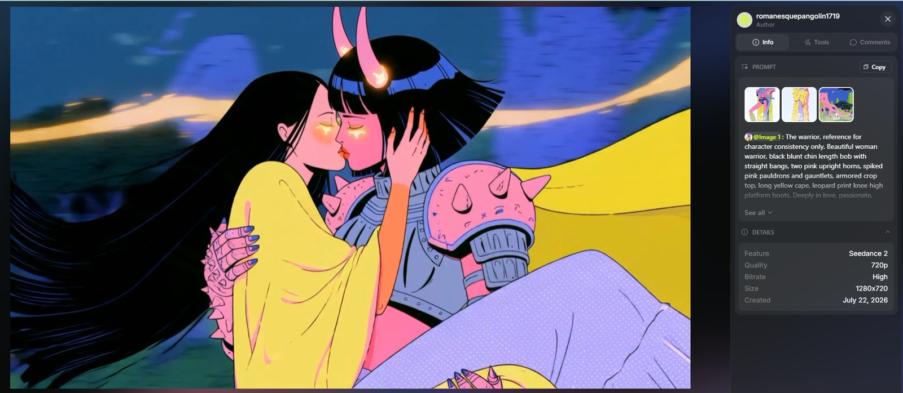
Seedance 2.0 prompt — the kiss
@IMAGE1: The warrior, reference for character consistency only. Beautiful woman warrior, black blunt chin length bob with straight bangs, two pink upright horns, spiked pink pauldrons and gauntlets, armored crop top, long yellow cape, leopard print knee high platform boots. Deeply in love, passionate, silent, never speaks. @IMAGE2: The woman, reference for character consistency only. Long straight black center parted hair, oversized yellow draped robe with wide sleeves over a lilac polka dot slip dress. Deeply in love, passionate. No dialogue. @IMAGE3: The neon forest, environment reference. ART STYLE 2D animation with strong multiplane depth, flat bold cel shaded characters over layered painterly backgrounds, thick clean linework, vivid neon palette matching the references. Shallow depth of field, the world falls into soft bokeh around them. The love radiates as bright golden hand drawn energy streaks, long cel animated ribbons of light streaming outward from the couple and whipping across the frame with the wind. NO leaves, NO dust, NO petals, NO particles. Pure sincere romance. One single continuous unbroken shot, a true oner. The camera orbits the couple in ONE direction, clockwise, at ONE constant speed and ONE constant close distance for the entire shot. The camera NEVER stops, NEVER slows, NEVER reverses direction, NEVER pulls back, NEVER goes wide, NEVER changes its distance from them. Constant clockwise close orbit from first frame to last frame. Color temperature: cool, with bright golden energy streaks wrapping the couple. ENVIRONMENT Environment as seen in @IMAGE3. Deep blue night in soft bokeh, strong wind. CONTEXT The warrior holds the woman in her arms and they kiss like the world is ending. Their love radiates outward. Only the two of them exist. BLOCKING Only two characters in the entire shot. The couple stands fixed at the exact center of the frame and does not move from their spot. The warrior holds the woman in a bridal carry, the woman lying across her arms, faces close. They face each other and look only at each other, then kiss and never break it. The camera travels around them on a fixed circular path, clockwise, at constant speed and constant close radius, faces always filling the frame. No other characters appear. SHOT 35mm, tight close up on their two faces for the entire shot, never wider. The camera is already orbiting clockwise as the shot opens, the warrior holding her close in the carry, their eyes locked, noses almost touching, golden energy streaks igniting around their silhouettes and streaming outward with the wind, and they melt into a deep passionate kiss, full of love, her fingers sliding into the black bob, the warrior pulling her tighter, and as the kiss deepens the energy ribbons flare brighter and radiate further, whipping across the frame with the wind, the camera continuing its steady clockwise orbit at the same speed and same close distance the whole time, her long hair and the yellow cape streaming and tangling in the wind, strands crossing the lens as the orbit carries the camera past them, golden streaks flaring across both faces and glinting on the horns, the kiss never breaking, and the shot ends mid orbit, same speed, same distance, still kissing, energy still radiating. The orbit never pauses and never changes. One continuous clockwise orbiting take throughout. Duration: 8 seconds. LIGHTING Cool blue night bokeh behind them, golden energy streaks flaring across both faces and rimming their profiles. No flicker, no strobing. PHYSICS Energy ribbons radiate outward with momentum and flow with the wind, hair and cape whip and tangle with weight, her sandals dangle from the carry. No particles of any kind in the air. AUDIO NO MUSIC. Sound effects only.
The last shot, and the hardest one to get: two characters live inside a single reference image, and Seedance kept losing track of which one was speaking. This prompt took several attempts before the fix landed — and the fix wasn't emphasis, it was structure.
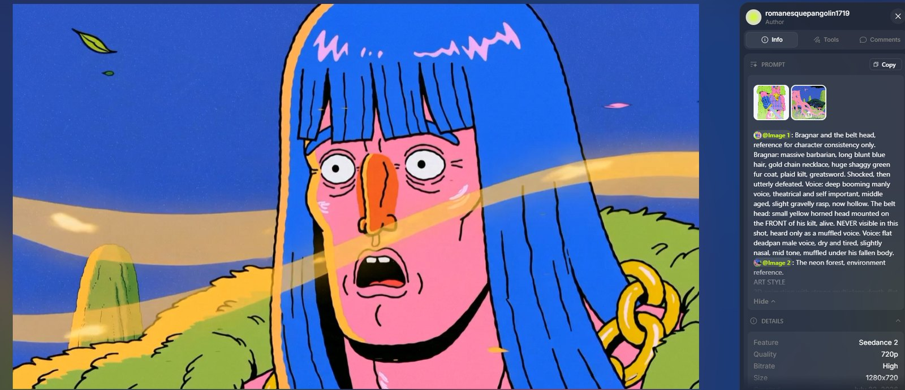
Seedance 2.0 prompt — Bragnar falls
@IMAGE1: Bragnar and the belt head, reference for character consistency only. Bragnar: massive barbarian, long blunt blue hair, gold chain necklace, huge shaggy green fur coat, plaid kilt, greatsword. Shocked, then utterly defeated. Voice: deep booming manly voice, theatrical and self important, middle aged, slight gravelly rasp, now hollow. The belt head: small yellow horned head mounted on the FRONT of his kilt, alive. NEVER visible in this shot, heard only as a muffled voice. Voice: flat deadpan male voice, dry and tired, slightly nasal, mid tone, muffled under his fallen body. @IMAGE2: The neon forest, environment reference. ART STYLE 2D animation with strong multiplane depth, flat bold cel shaded characters over layered painterly backgrounds, thick clean linework, vivid neon palette matching the references. Shallow depth of field. Golden hand drawn 2D energy streaks from the off screen kiss stream into the frame from frame left, long cel animated ribbons of light whipping past with the wind. NO leaves, NO dust, NO petals, NO particles, only drawn energy streaks, wind, hair and fabric. Deadpan comic timing, long holds. One single continuous unbroken shot, a true oner, the camera never cuts and never jumps. Color temperature: cool, with golden energy streaks entering from frame left. ENVIRONMENT Environment as seen in @IMAGE2. Deep blue night, wind, golden 2D energy ribbons streaming in from off frame left where the kiss is happening. CONTEXT Off frame, the warrior and the woman are kissing so hard their love radiates energy. The hero watches everything he believed collapse. The kiss itself is never shown. BLOCKING Bragnar alone in frame, standing at frame center, facing frame left toward the off screen kiss. The belt head is on the FRONT of his kilt, so when he falls face down it is pinned underneath his body, completely hidden. He falls forward toward frame left. The camera stays on him the whole shot. The kiss is always off frame left and never shown. SHOT 35mm, tight close ups only. The camera opens tight on Bragnar's face lit by warm golden light from frame left, golden energy ribbons whipping past him with the wind, his hair streaming, eyes wide, jaw slack, pupils shrunk to dots, a long stunned beat as the streaks flare across his stunned face, then, shocked, barely above a whisper, he says: Let's be honest. He does not finish the thought. A beat. Then all the strength leaves his body at once, his eyes close, and he timbers forward like a felled tree, face first toward frame left, crashing flat into the moss with a heavy thud, dust NOT rising, only the fur coat settling over him like a burial mound, the belt head pinned beneath his massive body, and the camera keeps flowing without cutting and drifts down slowly to hold low on the motionless fallen giant, golden energy ribbons still streaming through the air above him, wind moving the fur, a long deadpan hold, and then from underneath him comes the muffled flat voice of the belt head: I hate it here... Can I change teams? The mound does not move. One continuous flowing take throughout. Duration: 8 seconds. LIGHTING Warm golden light and energy streaks from off frame left as the key on his face, cool blue moonlight everywhere else. The light source is never shown. No flicker, no strobing. PHYSICS He falls rigid like a tree, full body weight, heavy ground impact, the coat settling with fabric weight. Energy ribbons keep streaming above the fallen body with the wind. No particles of any kind. AUDIO NO MUSIC. Sound effects and their voices only.
What We'd Tell You
- Work backwards when it helps. A character you already believe in will tell you what the story is, and it'll be stranger than anything you'd have planned.
- Keep Midjourney prompts short. Format, identity, wardrobe, backdrop. Consistency lives in the parameter spine and the style codes, not in more words.
- Declare identity across references. "The SAME character as @IMAGE2, before transformation" plus one named anatomical change is what makes a morph read as one body instead of a cut between two designs.
- Give silent characters choreography. Ear up, ear down, slow eye roll. A mute character only gets a performance if you write one.
- Every "never" in a prompt is a scar. Write defensive constraints for what the model actually keeps breaking, and put the hard ones in the reference line where it reads identity.
- Split one event across two prompts when it won't fit. Write the cause and the effect as a matched pair, each one excluding what the other contains.
- Reroll before you rewrite. The same prompt twice can give you a miss and then exactly what you asked for.
Made in a day, on free credits, in eight second pieces. The constraint did more for the film than another week would have. If you build something with these, we'd love to see it.